Example: Modeling regional variation in mutation and recombination¶
Several of the simulation routines allow the details of the mutation and recombination models to vary along a “sequence” or “region”. A user is able to specify the details of such variation by passing lists to package functions. For example, you are able to:
- Vary the neutral mutation rate along a sequence.
- Vary the distribution of selection coefficients (and the dominance associated with selected mutations) along a sequence.
- Vary the recombination rate along a sequence.
The implementation of such variation along a region is discrete. A region is specified by a beginning, and end, and a weight, plus any additional data required to specify selection coefficients, dominance, etc.
Background¶
The models are parameterized through Python’s “new-style” class system.
Mutation rates, recombination rates, and a weighting system¶
A simulation will typically have a mutation rate, 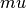, which represents the mean of a Poisson number of mutations per gamete per generation), and a recombination rate,  , which again is the mean of Poisson number of crossover events (per diploid, per generation). These parameters are the _total_ rates across an entire simulated region. Variation in these parameters along the region are affected by a set of positions coupled with “weights”, which the user specifies using S4 classes.
, which again is the mean of Poisson number of crossover events (per diploid, per generation). These parameters are the _total_ rates across an entire simulated region. Variation in these parameters along the region are affected by a set of positions coupled with “weights”, which the user specifies using S4 classes.
The base class: fwdpy.fwdpy.Region
A fwdpy.fwdpy.Region is an Python class with the following members:
 , which is the beginning/start of the region. The type is “float”.
, which is the beginning/start of the region. The type is “float”.- 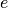, which is the end/stop of the region. The type is “float”.
 , which is a weighting factor associated with the region. The type is “float”.
, which is a weighting factor associated with the region. The type is “float”.
The members are used to inform the C++ code about the relative abundance of new mutations or recombination events will occur in what region. Briefly, the number of events that occur in region  are proportional to 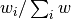, i.e, the weight assigned to region divided by the sum of weights assigned to all regions. The weights for mutation events and for recombination events are considered separately. Thus, in order to model a correlation between mutational processes and recombination, it is up to the user to generate regions whose weights are correlated.
are proportional to 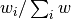, i.e, the weight assigned to region divided by the sum of weights assigned to all regions. The weights for mutation events and for recombination events are considered separately. Thus, in order to model a correlation between mutational processes and recombination, it is up to the user to generate regions whose weights are correlated.
fwdpy allows the slot to be interpreted in one of two ways:
- It is not affected by the length of region. Interally, the weight assigned is simply .
- It is affected by the length of a region 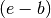.
These two options are determined by arguments to class constructors, which we will see in examples below. The latter is the default.
These two approaches allow for considerable modeling flexibility. For example, the latter approach allows to be interpreted as a “per base-pair” rate. Imagine that you wanted to simulate variation in recombination along discrete 100 kilobase chunks, and the rate of crossing-over per base pair increases in each chunk, and includes an initial chunk with no recombination:
- start=1,stop= 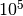, 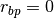
- start= ,stop= 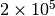, 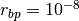
- start= ,stop= 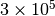, 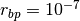
This model boils down to the relative number of crossing overs per region occuring in the ratio 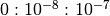. This is easily represented using fwdpy’s classes:
from __future__ import print_function
import fwdpy
recRegions = [fwdpy.Region(1,1e5,0),fwdpy.Region(1e5,2e5,1e-8),fwdpy.Region(2e5,3e5,1e-7)]
for i in recRegions:
print (i)
beg = 1.000000000, end = 100000.000000000, weight = 0.000000000
beg = 100000.000000000, end = 200000.000000000, weight = 0.001000000
beg = 200000.000000000, end = 300000.000000000, weight = 0.010000000
For this hypothetical example, the region lengths are all identical, and thus an equivalent specification would be this:
recRegions = [fwdpy.Region(1,1e5,0,False),fwdpy.Region(1e5,2e5,1e-8,False),fwdpy.Region(2e5,3e5,1e-7,False)]
for i in recRegions:
print (i)
beg = 1.000000000, end = 100000.000000000, weight = 0.000000000
beg = 100000.000000000, end = 200000.000000000, weight = 0.000000010
beg = 200000.000000000, end = 300000.000000000, weight = 0.000000100
Specific examples¶
Mutations not affecting fitness (“neutral” mutations)¶
You specify regions where neutral mutations arise via the class fwdpy.fwdpy.Region. A region has a beginning, end, and a weight Thus, the following list would specify that 100% of neutral mutations occur on the continuous interval [0,1):
neutralRegions = [fwdpy.Region(0,1,1)]
The beginning and end positions can be whatever you like:
#With a weight of 1, we're just rescaling the position here.
neutralRegions = [fwdpy.Region(0,100,1)]
To specify variation in the netural mutation process along a sequence, combine multiple regions in your list:
#If coupled=False for the second region, the effect would be that region2's mutation rate per base pair is 10x less than region 1!!
neutralRegions = [fwdpy.Region(beg=0,end=1,weight=1),fwdpy.Region(beg=2,end=12,weight=1,coupled=True)]
Internally, the total “mutational weight” of the first region will be a function of its length, which is 1(1-0)=1. The second region’s total weight will be 1*(12-2)=10, and it will have 10xas many new mutations arising as the first region.
#Let's see what happens if we set coupled=False:
neutralRegions2 = [fwdpy.Region(beg=0,end=1,weight=1),fwdpy.Region(beg=2,end=12,weight=1,coupled=False)]
print("The set with coupled=True:")
for i in neutralRegions:
print(i)
print("The set with coupled=False:")
for i in neutralRegions2:
print(i)
The set with coupled=True:
beg = 0.000000000, end = 1.000000000, weight = 1.000000000
beg = 2.000000000, end = 12.000000000, weight = 10.000000000
The set with coupled=False:
beg = 0.000000000, end = 1.000000000, weight = 1.000000000
beg = 2.000000000, end = 12.000000000, weight = 1.000000000
See the difference in the above? (Look at the “weight” term in the second line of each set.)
Mutations affecting fitness¶
Type types of mutations affecting fitness that we consider will have two parameters associated with them:
 , the selection coefficient
, the selection coefficient , the effect of the mutation in a heterozygote (a.k.a. the “dominance” of the mutation).
, the effect of the mutation in a heterozygote (a.k.a. the “dominance” of the mutation).
In a simulation, we may place a distribution on either itself or on the scaled selection parameter 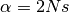. These two methods are represented by the class fwdpy.fwdpy.Sregion. These classes contain/extend the Region class described above, and thus inherit their members. Sregion adds , which is the dominance of a mutation, and then classes extending Sregion add details about the distribution of fitness effects. These classes are:
Crossover rate variation¶
Just like neutral mutations, intervals with different crossover rates are specified by different Region objects. Let’s set up the following concrete example:
- A region where crossovers occur between positions [0,1)
- Positions [0,0.45) and [0.55,1) have uniform recombintion rates
- Positions [0.45,0.55) are a recombination hotspot with 100x the background intensity (per “base pair”).
The above model can be represented as:
#recrate[2] is the hotspot:
recrates = [fwdpy.Region(0.,0.45,1.),fwdpy.Region(0.55,1.,1.,),fwdpy.Region(0.45,0.55,100.)]
for i in recrates:
print (i)
beg = 0.000000000, end = 0.449999988, weight = 0.449999988
beg = 0.550000012, end = 1.000000000, weight = 0.449999988
beg = 0.449999988, end = 0.550000012, weight = 10.000002384
Please note: the apparent ‘slop’ that you see above (e.g., the output looks oddly rounded vis-a-vis the input) does not appear to be passed on to the C++ internals, which is where it really matters. This appears to simply be a display issue.
Internally, this is what will happen to the above input:
- The total weight on the first region will be 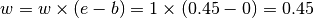
- The weight on the second region will be 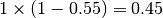
- The weight on the hotspot will be 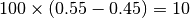
This gives us what we want: the hotspot is 100x hotter “per base”, and is 10% of the total region in length. We therefore expect 10x as many crossovers in that region as in the flanking regions.
How to set up a model¶
When setting up a model, it is important that you think in terms of conditional probabilities. In other words, if the total rate to neutral variants is 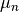, then the weights passed along to a function have the interpretations “Given that a neutral mutation occurs, the probability that it occurs in a certain interval is  , where is determined by the relative weight assigned to an interval.
, where is determined by the relative weight assigned to an interval.
The ‘weights’ that you assign are relative and need not sum to 1. Each weight must be 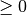, though.
Example¶
import fwdpy
import numpy as np
rng = fwdpy.GSLrng(100)
##Some basic parameters
N=1000
theta=100.0
rho=100.0
##All neutral muts are [0,1)
nregions = [ fwdpy.Region(0,1,1) ]
#Selected mutations. All are additive, to keep this example simple.
##Strongly deleterious mutations to the "left"
##Weaker mutations (2Ns = 10 on average) to the "right"
## 1% of selected mutations will be positively selected
## and uniform throughout the region. The distribution
## of s will be exponential with mean 1e-3
smodels = [fwdpy.ConstantS(-1,0,0.99/2,-0.1),fwdpy.ExpS(1,2,0.99/2,-10),fwdpy.ExpS(-1,2,0.01,0.001)]
##Recombination models--10x hotspot in the middl
rregions = [fwdpy.Region(-1,1,1),fwdpy.Region(0.45,0.55,10)]
#set up list of population sizes,
#which are NumPy arrays of ints
popsizes = np.array([N],dtype=np.uint32)
popsizes = np.tile(popsizes,10*N)
pops = fwdpy.evolve_regions(rng,1,N,popsizes[0:],theta/(4*N),0.1*theta/(4*N),rho/(4*N),nregions,smodels,rregions)
#Take a sample of size n = 10 from the population via list comprehension
popSample = [fwdpy.get_samples(rng,i,100) for i in pops]
If we pass the same neutral and selected mutation rates to evolve.regions, then the above model satisfies:
- The total number of mutations occurring in Exon 2 is 2x the number occuring in Exon 1.
- Within an exon, 3/4 of all new mutations are deleterious.
#Let's convert from tuples to pandas DataFrames.
#Ideally, one would further split each tuple element into a list,
#but this example let's us get the point...
import pandas
neutralMuts = pandas.DataFrame.from_records(popSample[0][0],columns=['pos','genotypes'])
selectedMuts = pandas.DataFrame.from_records(popSample[0][1],columns=['pos','genotypes'])
print(neutralMuts.head())
pos genotypes
0 0.006588 0000000000000000000000001000010000000000000000...
1 0.012971 1000000000010101000001000010101000000000000010...
2 0.014566 0110000010000010000010010000000111001000010000...
3 0.014729 0000000000000000000000000000000000000000100000...
4 0.020637 0000010000000000000000000000000000000000000000...
print(selectedMuts.head())
pos genotypes
0 1.016680 0101110011001110000011010011011001010000011100...
1 1.192438 1010001100110001111100101100100110101111100011...
2 1.197182 0101110011001110000011010011011001010000011100...
3 1.365021 0101110011001110000011010011011001010000011100...
4 1.402332 1010001100110001111100101100100110101111100011...